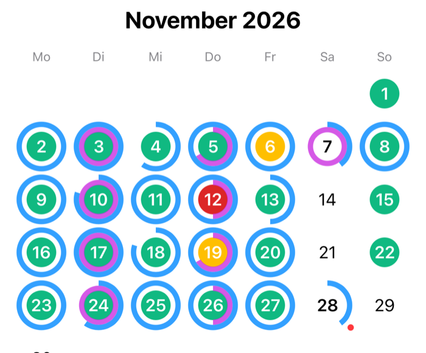

Verworfen am 28.11.2026: Der innere Kreis bleibt NoAlc, die anderen Gewohnheiten kommen in die Leiste über dem Kalender (siehe „Challenges im Kalender“, Weiterführung von Idee 3). Diese Seite bleibt nur als Verlauf.
Heute ist die Füllung in der Mitte jedes Tages der NoAlc-Stand: grün, gelb oder rot. Künftig fasst sie alle dauerhaften Gewohnheiten des Tages zusammen. Der blaue Meditationsring und der lila Workoutring bleiben genau wie heute. Alle Bilder zeigen denselben November.

Echter Screenshot aus dem Simulator, mit Beispielwerten für Meditation, Workout und NoAlc.
Das ist die Wahl zwischen A, B und C oben.
Empfehlung: A. Es ist der Vorschlag aus unserer Diskussion vom 13.11. und als einziger zeigt er beides, ob du hingeschaut hast und wie gut der Tag war.
Bei einem Vermeiden-Tracker heißt ein leerer Tag „gelungen“. Die App kann nicht unterscheiden, ob du es vermieden oder vergessen hast. Alle mitgelieferten Vorlagen (Doomscrolling, Snacking …) funktionieren anders herum: Dort trägst du ein, wenn du es bemerkt hast, und das zählt als gelungen. Vermeiden-Tracker gibt es nur, wenn du selbst einen so angelegt hast.
Empfehlung: kein neuer Knopf „heute nicht passiert“. Ein leerer Tag zählt bei einem Vermeiden-Tracker als eingetragen und gelungen, genau wie bei der Serie heute schon.
Am Tracker gibt es schon einen Schalter „Im Kalender zeigen“, der bisher nichts bewirkt. Neue Tracker haben ihn aus.
Empfehlung: alle aktiven Gewohnheiten zählen, der Schalter bleibt wirkungslos wie heute. Sonst müsstest du ihn erst bei jedem Tracker einschalten, bevor der Kalender überhaupt etwas zeigt.
Gilt für alle Varianten: Tage, bevor eine Gewohnheit angelegt wurde, zählen für sie nicht. Ein Tag ganz ohne Eintrag bleibt leer wie heute. Zeitlich begrenzte Challenges zählen nicht mit. Antippen des Tages zeigt wie bisher jede Gewohnheit einzeln. Die Nachzeichnung entspricht der App in Größen und Farben; nur die Füllung ist neu.